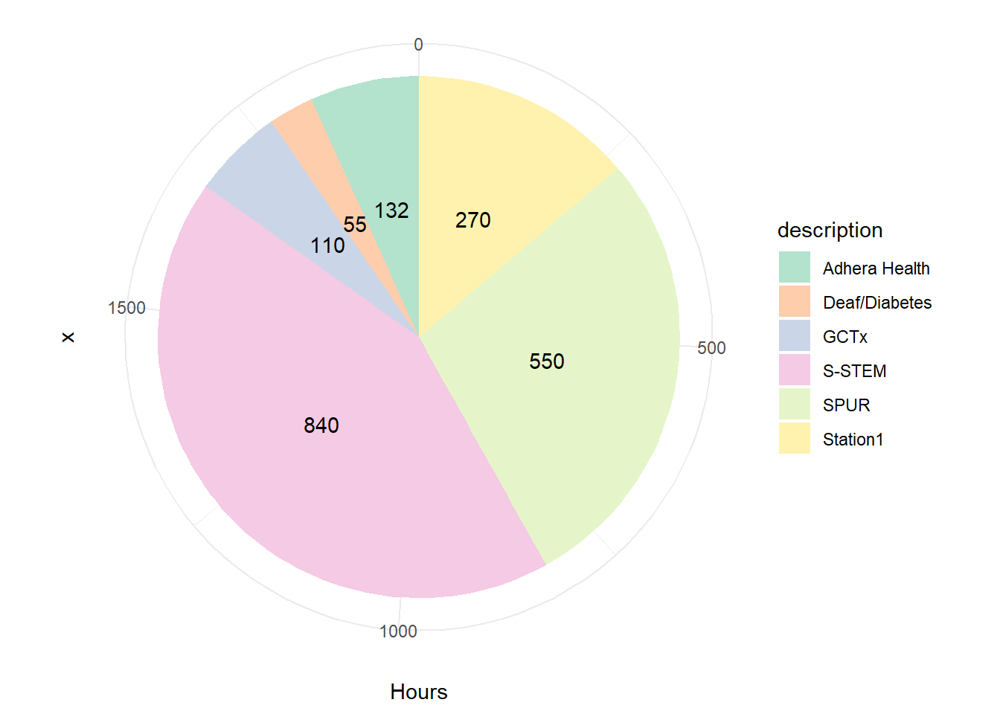

Research
Pie Chart
As of November 14, 2023, I have spent 1957 hours doing research.
S-STEM Scholarship
Description
I was granted this scholarship early in my academic endeavors. This scholarship is NSF funded and is focused on giving undergraduate students research opportunities. It included a full-ride scholarship, $1000 per year for research expenses, $1000 per year for travel expenses, and the opportunity to create a project with hand-picked faculty advisors. I knew that I was interested in making others’ path that are similar to mine easier, especially for those who have had medical conditions. A lot of the faculty was interested in pursuing wet-lab studies focused on mushrooms, pigeon feather color, or drosophila, and all of those opportunities would have taught me a lot. Seeing as my degree is in biology, I knew that I would have exceeding amounts of wet lab experience, so I decided that I wanted to pursue a research project that would give me skills I otherwise couldn’t experience. I decided to work with Drs. Britt Wyatt and Josh Premo studying science motivation. I specifically chose to study how having medical experiences leads to STEM motivation, as that was the path that I took personally. For more information on this research, follow this link to see my presentations at conferences. I have been involved with this research since September of 2020, and I have spent on average 5 hours a week on these projects, with many of the weeks before presentations requiring more hours.
Learnings
This research experience has been the largest influence on my growth as a scientist. This project was mine. With help from Drs. Wyatt and Premo, I designed this project, was responsible for its growth, and ultimately saw the project through. The scientific process was at the core of everything I did, and I learned how to effectively apply that process to both bioinformatics and statistical analysis. Instead of increasing on my wet lab research, I learned a completely different facet of research that could be applied to any research projects I will do in the future. Statistical analysis is needed for any project, and I now am competent in R and am learning Python. These skills, as well as skills in presenting scientific research, has ultimately changed the path I am taking towards my professional goals.
Station1
Description
“The Station1 Frontiers Fellowship (SFF) is a prestigious, fully-funded ten-week summer experience for undergraduate students focused on socially-directed science and technology education, research, and innovation. A unique internationally-recognized model of higher education, the SFF includes an exciting research internship in emerging areas of science and technology with leading established and startup partner companies, research institutes, and nonprofit organizations, a cross-interdisciplinary shared curriculum, and personal and professional advancement activities including inclusive leadership and collaboration, scientific and technical communication, networking, and more. Station1 coordinates an exceptional portfolio of internship research projects in all science and technology majors, including, for example, areas such as biotechnology and public health (e.g. tissue engineering, marine genomics, synthetic biology, AI/ML diagnostics, circular biomaterials), civic technologies, environmental and clean technologies, inclusive digital networks and media, and sustainable advanced manufacturing and next generation infrastructure (Source).”
I was partnered with a company called GCTx (George Church Therapeutics). This company was born from the Church Lab at Harvard. George Church “helped initiate the Human Genome Project in 1984 and the Personal Genome Project in 2005 (Source), and he is a Professor of Genetics at Harvard Medical School and Professor of Heath Sciences and Technology at Harvard and MIT. GCTx”uses synthetic biology to program stem cells into any cell type with best-in-class efficiency (up to 10X), speed (up to 100X) and scalability. We dictate cells fates in a single step and have validated cells for many applications. We have also developed SuperCells™ by tailoring cells for specific diseases (Source).” My role with the company was to explore all diseases in a specific organ system and determine the efficacy of the application of their innovative cell therapy for the curing of those diseases. I was involved with Station1 for 10 weeks, averaging 27 hours a week on this project.
Learnings
This research experience taught me how to research difficult subjects largely on my own. The company informed my partner and I that their goal for us was that we would become experts on all diseases involved with the specific organ system we were studying. The Fellowship was totally virtual, and this made the research be largely dependent on my individual motivation. I did have weekly meetings with advisors where we could ask questions, but outside of those 2 hours a week meetings, I was responsible for the success of my part of the research. At the end of this research experience, our advisor informed us that we had a knowledge of the specific organ system we studied comparable to a Junior in medical school, and again, this knowledge came largely through my own actions. I feel that this experience taught me one of my most important life lessons: I feel that I (as well as everyone else) has the capability to learn anything. It may take me more time to learn something than the next guy, but I know that with enough work, anybody can learn anything.
The end deliverable for this research experience can be found here.
GCTx
Description
Following my time with Station1, GCTx offered me the opportunity to stay on as an intern, exploring different organ systems that could benefit from their cell therapy. As this was not partnered with a Fellowship, there was not a deliverable to sum up this research. Instead, that research stays proprietary to the company. In my time with them, we explored all possible diseases in 2 other organ systems, bringing the number of organ systems I studied to 3 in all my time with GCTx. I was involved with this project for 7 months, giving roughly 5 hours a week to this project.
Learnings
Much as before, this was an experience that was totally virtual with even less meetings with our advisors. This helped me improve on my self motivation regarding research. Also, we were expected to do almost double the work in less than half the amount of time that we had in the summer, requiring better, more concise research. Lastly, this all occurred during 2 busy school semesters that both included 16 credit hours and Organic Chemistry. I had to learn how to effectively manage so many things on my plate at the time.
Summer Program for Undergraduate Research SPUR
Description
“SPUR is a nationally competitive opportunity that provides undergraduate students with an intensive 10-week summer research experience under the mentorship of a University of Utah faculty member. The program provides opportunities to gain research experience in a variety of disciplines.”
Learnings
I am currently involved in SPUR, and I am excited to report back at the end of my time here on my experience.